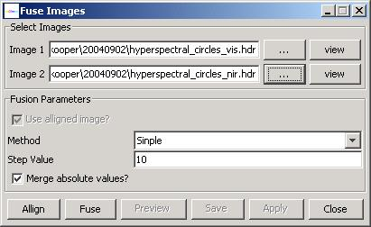
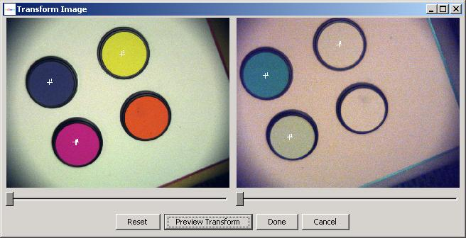
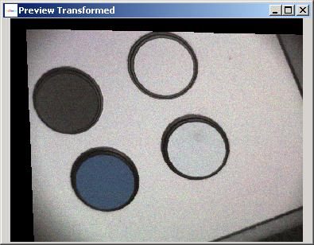
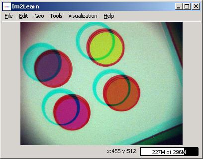

The class HyperSpectralFusion provides a tool for fusing hyperspectral images acquired at different wavelength ranges and spectral resolutions.
Description: This class was developed for fusing hyperspectral images
acquired by OptoKnowledge Inc. hyperspectral camera that contains visible spectrum
and near infrared spectrum liquid crystal tunable filters (LCTF). The hyperspectral
images of the same scene are acquired at different wavelengths (e.g., [400nm,
720nm] and [65nm, 1100nm]). Thus, the fusion process consists of spatial alignment
(registration) and then spectral fusion of the overlapping bands. The dialog
for hyperspectral image fusion is shown below.

First, two images are selected using the file chooser invoked by clicking on
the button "...". The images can be previewed using the adjacent buttons labeled
as "View". After clicking the button "Align", a frame with the two selected
images will appear (see below). The registration control points have to be selected
by clicking at corresponding salient features of images in each image panel.
A user has to select at least three registration control points since an affine
transformation model is used. By right clicking on either image panel, one would
be allowed to choose the combination of displayed bands for multi-band images,
zoom level and image operations.

The resulting image after alignment can be previewed by clicking on the button
" Preview Transform". An example image after alignment is shown below. The operation
is completed and the "Transform Image" frame is closed after clicking the button
"Done".

To perform the spectral fusion, the button "Fuse" should be pressed. Before
executing the fusion, one should set the fusion method (simple, average, step),the
step parameter and the option denoted as "Merge absolute values?".
The method denoted as "Simple" takes always bands from image1 if wavelengths
overlap otherwise bands from image1 or image2 are used in the resulting fused
image. The wavelength increments will not be normalized (i.e., if image1 has
a 10nm step per wavelength and image2 has 15nm per wavelength, the resulting
image will have wavelengths of 10, 15, 20, 30, 40, 45 etc. The wavelength spacing
will be stored in image properties.
The method denoted as "Average" creates an average band value from image1
and image2 if wavelengths overlap otherwise bands from image1 or image2 are
used in the resulting fused image. Based on the option denoted as "Merge absolute
values?" either the values are simply averaged, or the relative values with
respect to each image dynamic range are averaged. The wavelength increments
will not be normalized (i.e., if image1 has a 10nm step per wavelength and image2
has 15nm per wavelength, the resulting image will have wavelengths of 10, 15,
20, 30, 40, 45 etc. The wavelength spacing will be stored in image properties..
The method denoted as "Step" forms the resulting fused image by using
a fixed spectral increment based on the step parameter. In the image1 and image2
overlapping spectral range, the fused value is determined by linear interpolation
of the closest values, or if the image1 and image2 bands are the same then by
averaging. In the non-overlapping spectral regions, the desired band is computed
by interpolating two closest bands.
An example of the fusion result is illustrated in the figure below. The example
shows purposely misaligned images with
two bands (blue and green) from image 1 and the third band fromthe physical
red wavelength range obtained by using the "Simple" method for computing the new values.

Author: Rob Kooper.
Documentation: Peter Bajcsy.